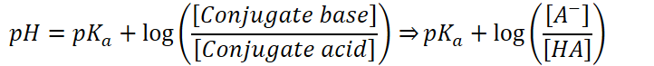
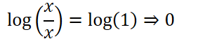
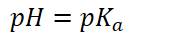
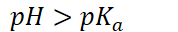
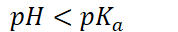

pH of a buffer is related to the pK~a~ of the acid
<!-- -->
<!-- -->
Relationship can be described by the Henderson-Hasselbalch equation
Assume that equilibrium concentrations of the acid and its conjugate base are approx. equal to their initial concentrations
Initial concentrations of the acid and conjugate base are usually large
The equation:
{width="7.520833333333333in" height="0.7604166666666666in"}
Assume very little of the weak acid ionizes and forms conjugate base
Can also be used to qualitatively determine information about a reaction
When acid and conjugate base concentrations are equal:
{width="3.1458333333333335in" height="0.5833333333333334in"}
Log term drops out
{width="1.8541666666666667in" height="0.3333333333333333in"}
When conjugate base concentration is greater than the acid form:
Log term is positive
{width="1.8541666666666667in" height="0.3333333333333333in"}
When conjugate base concentration is less than the acid form:
Log term is negative
{width="1.8541666666666667in" height="0.3333333333333333in"}